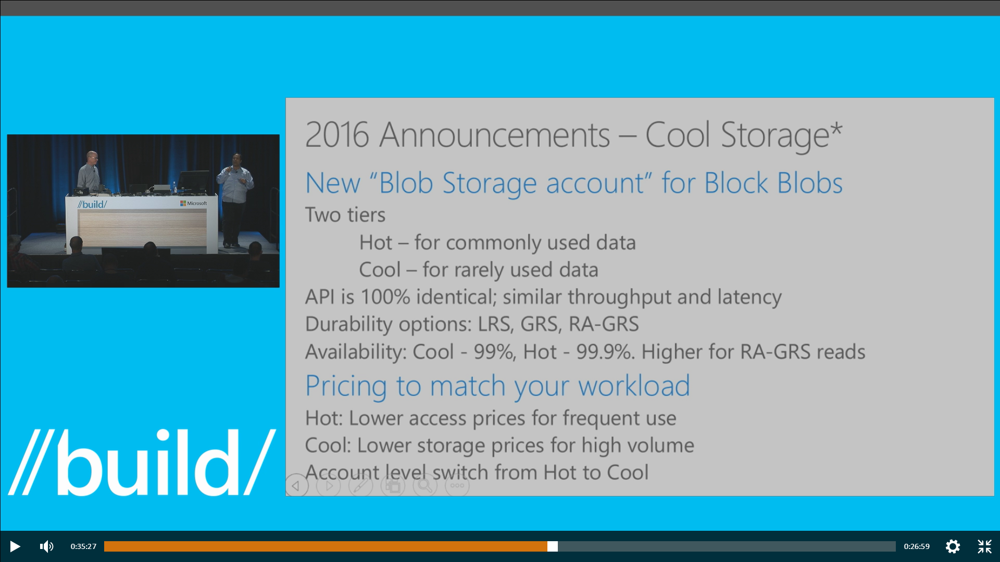

Reliable Collection の Lock の挙動
先日、5/18 に、第1回Jazug Tokyo Nightで、Azure Fabric Service の Reliable Collection 話をしました。Global Azure Boot Camp 2016 in Japanでも話をしたのですが、1時間ぐらいだと概要も話し切れない感じでなかなか厳しい。4回ぐらいに分けても少し深いところ（そんなにDeepじゃないですが）をしたいなぁと思っていたところ、ちょうど良い機会が出来たので、早速時間を貰うことにしました。
今回は、その時の補足です。まずは、その時の資料です。Lock compatibility matrixの部分を更新しました
Azure Fabric Service Reliable Collection
勉強会の時に、下記の Lock compatibility matrix の赤枠の部分だけ、SQL Serverと違うという話をしました。「もしかしたら、ドキュメントが間違っているのかも」というようなことをその場では言いましたが、どきょメントが間違っているわけではなく、そこはSQL Serverと動きが違うとのことでした。そのあたりの話を説明します。（公式ドキュメントでは無いので、参考程度で）

Lock compatibility matrix
Reliable Collectionは、書込に最適化されていおり、matxi の赤枠の部分が、G(U)/R(S)時の動きが SQL Server とは異なっています。また、Reliable Collection では、update lockの期間は短くほとんどの場合、exclusive に昇格して終わることを前提としています。設計思想が違うという話のようです。
下図のような場合で動作を説明します。

- 上が、Reliable Collection,下がSQL Server
- 横軸が時間で、それぞれ、２つのtransactionがある
- 黄色線が、tnxid 2 が、shard lock を要求したタイミング
TxnId1が、update lockを掛けている時、TxnId2がShard Lockを要求した場合(垂直黄線)、Reliable CollectionではUpdate Lock が、Exclusive Lock になって更新が終わりlockが開放されるまでshard lockは待機します。それに対して、SQL Serverでは、即時にshard lockは成功します。全てのshard lockが開放されてから、exclusive lock ->更新という処理に流れになります。この違いはなかなか面白いですね。
参考
SQL Server のロックの互換性 (データベース エンジン)
最後に
Reliable Collection は結構手堅くしっかり作っている感じを受けます。この手のものがあると、Data Localityを健全に保てるのでレイテンシー上は非常に有利になります、いいですね。
「上記２つに更に .NET の ReaderWriterLockSlim と、Jeffrey Richter の OneManyLock を入れて、永続化の有無がどう影響するのか考察したら面白いのかな？」と一瞬思ったのですが、今回はこの辺で。勉強会の前に明確にしておけば良かったのですが、ちょっと見逃してました。でも、SQL Serverと違って、lock やwait の状態が見えないのがちょっと不便ですね。これだと、ラッシュテストしないとデッドロックとかわからないです。
BUILD/2016 Azure Cool Storage
BUILD 2016B816 Learn How to Store and Serve PBs of Object Data with Azure Block BlobsでCool Storageという、とても興味深い新機能が発表されていました。Build 2016: Azure Storage announcementsに入ってなくて、見落としそうになります…
{kind=link}
Cool Storageは、アクセス頻度の低いデータを安価に保存するための新機能で、Block Blob でサポートされます。
これで、Block Blob は、２の tier に別れます。
- Hot - 通常利用のデータ向け (従来のBlob）
- Cool - あまりアクセスしないデータ向け （あたらしいやつ）
概要
- APIは、100% 互換で、同様のスループットとレイテンシーを実現（Coolでも性能が同じなのは設計しやすくなるので有り難いことです）
- LRS, GRS, RA-GRSの信頼性オプションを提供（ 同じですね）
- 可用性は、Coolが 99% で、Hot が 99.9%（ちょっと、Coolが低くなります）
お値段関係
Hotは、頻繁に使った場合に費用が抑えられ、Coolは、容量が大きい場合に安くなるという価格体系で構成されるようです。話の中ではちょっとはっきりしませんでしたが、トランザクションコストやデータ転送コストで差を付けるという感じなのかもしれません。
HotからCoolへの切替もできるようなので、履歴系のデータを保存するにはとても便利な気がします。next few weeks で、public preview に入るそうです。楽しみですね。
この話は、動画では、33分、パワポの資料では、30p 当たりで話が出来てますので、興味のある方はぜひ、chanel 9 をご覧ください。[1]
最後に
どうも、AWS の S3 Standard-IA とか、Google Nearline あたりと同じような領域をカバーするサービスのようです。S3 Standard-IA は、Google Nearline とは違って、レスポンスタイムが通常のBlob並ってところは良い感じです。価格の詳しい条件がわからないので、現時点でS3との比較は難しいですが、Cool Storageは、Hot/Coolの切替がアカウント単離っぽいので、実データのコピーは必要無さそうで、そのあたりで差がでてくるのでは無いかと言う気がします。
今回の、BUILDでは、 Server Siide Encription[2]も発表されて、Storage Team に活気を感じました。これからが、楽しみです。
現在 のGuest OS Version の確認方法
.NET Framework 4.5, 4.5.1 のサポート終了に少し遅れましたが、Azure の Cloud Service でも、Gest OS 4.28 から .NET 4.5.2 がサポートされるようになりました。Azure Guest OS releases and SDK compatibility matrix
現在絶賛展開中ですが、手元のCloud Serviceには、すでに来ていました。
Visual Studio での確認
現在の Guest OSのバージョンは、下記のように、Visual Studio で、Roleのプロパティを開くと確認することができます。

Azure PowerShell での確認
Azure PowerShell は、1.1.0 では確認できなかったのですが、今回のように、GUEST OSのバージョンが重要な場合に確認出来ないのは不便なので、OSVersionが帰ってくるようなパッチを作って PR を出してみたら、さくっと翌日にはマージされ次のリリースで無事に現在のバージョンがわかるようになりました。（もともと、REST APIには存在するし簡単な修正だったので、なにかの拍子に漏れてしまっただけだと思います）
Fix to missing OS Version in Get-AzureRole #1638

Azure PowerShell Team オープンですね！素晴らしい
こんな感じで確認することができます。
$ Get-AzureRole -ServiceName kinmugics10 -Slot Staging
RoleName : WorkerRole1
InstanceCount : 1
DeploymentID : c49d5437f1a84345b9739a79ff333056
OSVersion : WA-GUEST-OS-4.28_201601-01
ServiceName : kinmugics10
OperationDescription : Get-AzureRole
OperationId : 0ffbd548-3b37-6c15-afa4-e091056e0849
OperationStatus : Succeeded
現状だと、「新ポータル、旧ポータル」では、適応されているcscfgの内容だけで、自動更新に設定されている場合にどのGuest OS が使われているかは確認できません。
おまけ、Get-AzureDeploymant
似たような情報を返してくるコマンドに、Get-AzureDeployment というのがあり、OSVersionが帰ってきます。「*」 が帰ってきて、すぐに実行中のGest OSがかえってくるわけではないことがわかりますが、ソースを確認してみます。コード的には、このあたりでOSVersion のプロパティを設定しています。つまり、csdefで設定されているosVersionが入り、自動更新を設定した場合、「*」となって現在のOS バージョンは分かりません。
最初これで行けるかと思ったんですがね。
Azure Storage Client Library をDNXで使ってみた
Microsoft Azure Advent Calendar 2015 2日目
.NET 用のAzure Storage Client Libraryが、 6.1.1-preview (2015/10/30リリース) から DNXCore 5.0 にも対応しているので、どれぐらい動くのか簡単なコンソールアプリケーションを作ってみた。 ソースgithub.com/takekazuomi/scldnx-sample

環境
コードは、 Visual Studio 2015 Update 1 で書いて、dnx 関連のコマンドでコンパイル実行という流れ。最近なんやら、dotnetというコマンドも有るらしいが今回は使っていない。新規プロジェクトで、C# -> Web の下の、コンソールアプリケーション(パッケージ）というのを選択。（どうしてWebの下なのかさっぱり分からない）

これで、見慣れぬ構造でプロジェクトが出来る。ソリューションのフォルダーには、sln のファイルと一緒に global.json が出来、プロジェクト本体は、src/[プロジェクト名] の下に作成される。プロジェクトファイルは、project.json とJSONのファイルになっている。（コメント書けないのでJSONは止めて欲しい）
dnxは、最新の実行環境を使うことにした。今のところ、stable とか release に拘ってもあまり意味ないほどころころとよく変わっている。dnvm コマンドのインストール方法はプラットフォーム毎に違うが、その後はかなり同じような感じで使える。
$ dnvm upgrade -a x86 -r coreclr -u
dnvm upgrade で入れると、alias default が定義され PATHも切られる。dnvm installと、dnvm useを使って方が良いかもしれない。入っているかを、dnvm list で確認する。最後の行が active になっている。
$ dnvm list
Active Version Runtime Architecture OperatingSystem Alias
------ ------- ------- ------------ --------------- -----
1.0.0-beta5 clr x64 win
1.0.0-beta5 clr x86 win
1.0.0-beta5 coreclr x64 win
1.0.0-beta5 coreclr x86 win
1.0.0-beta7 clr x86 win
1.0.0-beta7 coreclr x86 win
1.0.0-beta8 clr x64 win clr
1.0.0-beta8 clr x86 win
1.0.0-beta8 coreclr x64 win coreclr
1.0.0-beta8 coreclr x86 win
1.0.0-rc1-15838 clr x86 win
1.0.0-rc1-15838 coreclr x86 win
1.0.0-rc1-15904 clr x86 win
1.0.0-rc1-15904 coreclr x86 win
1.0.0-rc1-update1 clr x64 win
1.0.0-rc1-update1 clr x86 win
1.0.0-rc1-update1 coreclr x64 win
1.0.0-rc1-update1 coreclr x86 win
1.0.0-rc2-16249 clr x86 win
* 1.0.0-rc2-16249 coreclr x86 win default
このあたりは、ASP.NET 5 の アドベントカレンダー のネタなので軽く飛ばします。[1]
コードの概要
基本的に、Azure Storage Client コード部分はほとんど従来の物と変わらない。
テーブルのリストを取る部分は、こんな感じ。
TableContinuationToken token = null;
do
{
var result = await _tableClient.ListTablesSegmentedAsync(null, null, token, null, null, cancellationToken);
result.Results.ToList().ForEach(table => Console.WriteLine($"{table.Name}"));
token = result.ContinuationToken;
} while (token != null);
ちょっと困ったのは、Table のQueryが Fluent Mode しかサポートしていなくて IQueryable Mode が使えないこと。[2]試しに、WADのPerformanceカウンターを保存しているテーブルを操作するコードを書たら下記のようになった。フィルターの部分が少々煩雑だ。
public async Task RunAsync(CancellationToken cancellationToken)
{
var sw = Stopwatch.StartNew();
var min = _fromDate.ToUniversalTime().Ticks;
var max = _toDate.ToUniversalTime().Ticks;
var table = _tableClient.GetTableReference("WADPerformanceCountersTable");
var query = new TableQuery<WADPerformanceCountersTable>()
.Where(TableQuery.CombineFilters(
TableQuery.GenerateFilterCondition("PartitionKey", QueryComparisons.GreaterThanOrEqual, min.ToString("d19")),
TableOperators.And,
TableQuery.GenerateFilterCondition("PartitionKey", QueryComparisons.LessThan, max.ToString("d19"))));
var result = new List<WADPerformanceCountersTable>();
TableContinuationToken token = null;
do
{
var segment = await table.ExecuteQuerySegmentedAsync(query, token, null, null, cancellationToken);
token = segment.ContinuationToken;
result.AddRange(segment.Results);
// Console.Write($"{segment.Results.Count}.");
} while (token != null);
Console.WriteLine();
sw.Stop();
Console.WriteLine("Count:{0}, Min: {1}, Max: {2}, Elapsed: {3:F2} sec",
result.Count, result.Min(e => e.PartitionKey), result.Max(e => e.PartitionKey), (sw.ElapsedMilliseconds / 1000.0));
}
余談だが、WAD(Windows Azure Diagonestics )のテーブルは、tickを”d19”で書式化したもので、パーテーションを指定すると時系列で絞り込むことができる。この方法は、パーテーションのレンジクリーになるので、時間的なパフォーマンスがあまり良くないが、パッチなどで使うならば結果のデータ量を絞り込めるという利点がある。時間的なコストが重要なシナリオでは、並列化を検討すると良い。
動かしてみる
Storageの接続文字列は、環境変数 AZURE_STORAGE_CONNECTION_STRING から拾うようにした。VSから実行するときは、プロジェクトのプロパティでデバックを選択し環境変数を設定する。デバック時に環境変数を設定出来るのは非常に便利、Visual Studio では今ままで無かったのが不思議なぐらい。ランタイムも選択できるが、dnvm install などで予め入れておく必要がある。

コマンドラインの場合は、下記のようにビルドして実行する。シェルの違いなどで若干違うが、ほとんど同じような感じで実行できる。便利である。
- Windows 10 TH2
$ $env:AZURE_STORAGE_CONNECTION_STRING="Azure Storage Key"
$ dnu restore
$ dnu build
$ cd bin\output\approot
$ .\sclxplatclr.cmd ListTable
- Mac OSX 10.11.1
$ export AZURE_STORAGE_CONNECTION_STRING="Azure Storage Key"
$ dnu restore
$ dnu build
$ cd bin/output/approot
$ ./sclxplatclr.cmd ListTable
実行しているのはテーブルのリストを取ってるだけの簡単なコードなので、結果は省略
最後に
結局、ubuntu 15.04 でやったのは下記のようになって動かなかった。[3]
$ dnu restore
failed to locate libcoreclr with error libunwind-x86_64.so.8: cannot open shared object file: No such file or directory
言語は同じC#でも、ライブラリ回りで細かい違いがあってなかなかコーディングの手間がかかる。今回だと、MEFを使おうかと思ったら dnxcore50 に対応してなくて、Microsoft.Framework.DependencyInjectionを使ってみたり、Environment.CurrentDirectory()が、dnxcore50 に無かったり、カレントのAppDomain取ろうとしたら出来なかったり[4]などなど。
でもまあ、単独のバイナリに変換されるようになると、クロスプラットフォームなコンソールツールを作成する手段として重宝するんじゃないかなとは思った。
| [1] | DNX環境のセットアップ、Installing ASP.NET 5 On Mac OS X、Installing ASP.NET 5 On Linux |
| [2] | Fluent Mode と IQueryable Mode については、Announcing Storage Client Library 2.1 RTM & CTP for Windows Phoneの Conceptual model の部分が詳しい。 |
| [3] | Installing .NET Core on Linuxでは、Ubuntu 14.04 TLS を使っている。RTMではなるべく14.04以降など広いバージョンのUbuntuをサポートして欲しいところ。 |
| [4] | Assembly.GetExecutingAssembly, AppDomain.CurrentDomain and similar |